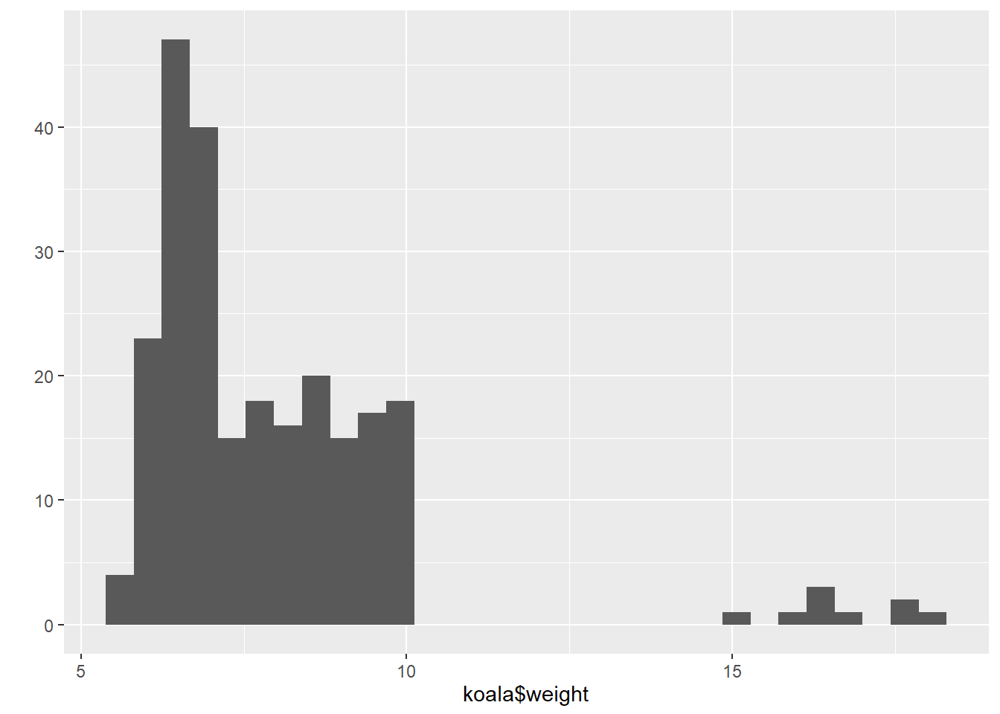
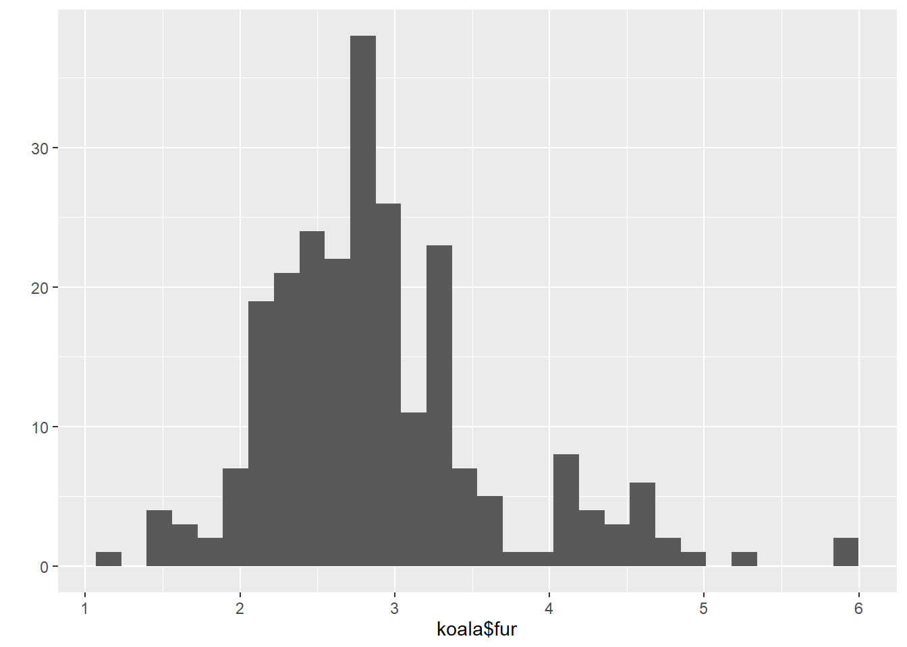
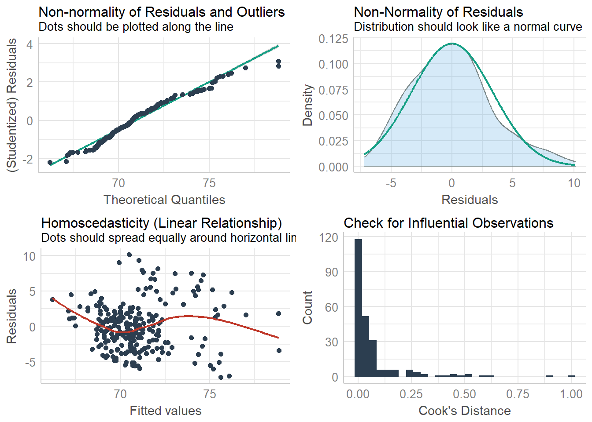
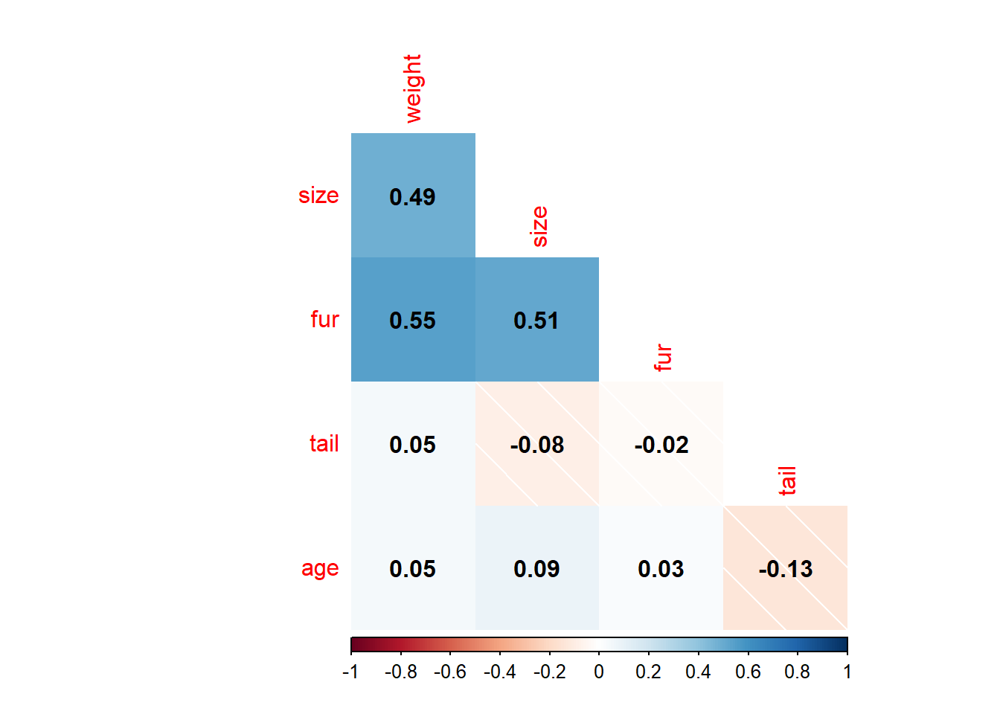

Chapter 6 Introduction to linear models in R
linear regression model is represented as:
\[Y = \beta_0 + \beta_1 X_1 + \beta_2 X_2 + \epsilon \]
Each of the model assumptions concerns the error term of the regression model. These are:
- Individual observations are independent
- Response data are normally distributed
- Variance is homogeneous across range of predictor
- Data are linear
## `stat_bin()` using `bins = 30`. Pick better value with `binwidth`.
## `stat_bin()` using `bins = 30`. Pick better value with `binwidth`.
## `stat_bin()` using `bins = 30`. Pick better value with `binwidth`.
##
## Call:
## lm(formula = weight ~ fur, data = koala)
##
## Residuals:
## Min 1Q Median 3Q Max
## -3.8853 -1.0215 -0.2989 0.9245 8.4996
##
## Coefficients:
## Estimate Std. Error t value Pr(>|t|)
## (Intercept) 3.4409 0.4569 7.531 1.02e-12 ***
## fur 1.5477 0.1527 10.137 < 2e-16 ***
## ---
## Signif. codes: 0 '***' 0.001 '**' 0.01 '*' 0.05 '.' 0.1 ' ' 1
##
## Residual standard error: 1.792 on 240 degrees of freedom
## Multiple R-squared: 0.2998, Adjusted R-squared: 0.2969
## F-statistic: 102.8 on 1 and 240 DF, p-value: < 2.2e-16## Analysis of Variance Table
##
## Response: weight
## Df Sum Sq Mean Sq F value Pr(>F)
## fur 1 330.01 330.01 102.76 < 2.2e-16 ***
## Residuals 240 770.77 3.21
## ---
## Signif. codes: 0 '***' 0.001 '**' 0.01 '*' 0.05 '.' 0.1 ' ' 1## Not enough model terms in the conditional part of the model to check for multicollinearity.## `geom_smooth()` using formula 'y ~ x'## `geom_smooth()` using formula 'y ~ x'## `stat_bin()` using `bins = 30`. Pick better value with `binwidth`.
##
## Call:
## lm(formula = size ~ fur, data = koala)
##
## Residuals:
## Min 1Q Median 3Q Max
## -7.1884 -2.3545 -0.2146 1.8404 10.1324
##
## Coefficients:
## Estimate Std. Error t value Pr(>|t|)
## (Intercept) 63.266 0.853 74.168 <2e-16 ***
## fur 2.650 0.285 9.295 <2e-16 ***
## ---
## Signif. codes: 0 '***' 0.001 '**' 0.01 '*' 0.05 '.' 0.1 ' ' 1
##
## Residual standard error: 3.346 on 240 degrees of freedom
## Multiple R-squared: 0.2647, Adjusted R-squared: 0.2616
## F-statistic: 86.4 on 1 and 240 DF, p-value: < 2.2e-16## Analysis of Variance Table
##
## Response: size
## Df Sum Sq Mean Sq F value Pr(>F)
## fur 1 967.19 967.19 86.4 < 2.2e-16 ***
## Residuals 240 2686.64 11.19
## ---
## Signif. codes: 0 '***' 0.001 '**' 0.01 '*' 0.05 '.' 0.1 ' ' 1## Not enough model terms in the conditional part of the model to check for multicollinearity.## `geom_smooth()` using formula 'y ~ x'
## `geom_smooth()` using formula 'y ~ x'## `stat_bin()` using `bins = 30`. Pick better value with `binwidth`. Correlation is a statistical technique that can show whether and how strongly pairs of variables are related.The main result of a correlation is called the correlation coefficient (or “r”). It ranges from -1.0 to +1.0. The closer r is to +1 or -1, the more closely the two variables are related.
corkoala<-koala %>%
select_if(is.numeric)%>%
select(-c(1,2))
corMat<-cor(corkoala, use="complete.obs", method = "pearson")
corrplot(corMat,
method="shade",
type="lower",
diag = FALSE,
addCoef.col = "black") Determine if two or more samples are from the same population -H0: -Sample means are all equal(i.e., ??A= ) -There is no effect of the factor on the response variablel -If reject H0 -Suggests that at least one sample mean is different from the others -If don’t reject H0 -No evidence that any of the sample means are different from the overall population mean
## Df Sum Sq Mean Sq F value Pr(>F)
## age 1 2.7 2.744 0.6 0.439
## Residuals 240 1098.0 4.575## Df Sum Sq Mean Sq F value Pr(>F)
## age 1 0.344 0.3441 4.448 0.036 *
## Residuals 240 18.568 0.0774
## ---
## Signif. codes: 0 '***' 0.001 '**' 0.01 '*' 0.05 '.' 0.1 ' ' 1## Df Sum Sq Mean Sq F value Pr(>F)
## age 1 2.7 2.744 0.6 0.439
## Residuals 240 1098.0 4.575## Analysis of Variance Table
##
## Response: weight
## Df Sum Sq Mean Sq F value Pr(>F)
## age 1 2.74 2.7436 0.5997 0.4395
## Residuals 240 1098.04 4.5752Making a new variable to start with presence absence data
ifelse returns a value with the same shape as test which is filled with elements selected from either yes or no depending on whether the element of test is TRUE or FALSE.
mutate Mutate adds new variables and preserves existing; transmute drops existing variables.
## 0 1
## 185 57A series of test/training partitions are created using createDataPartition
Any supervised machine learning task require to split the data between a train set and a test set. You can create in the other supervised learning tutorials to create a train/test set.
## Loading required package: lattice##
## Attaching package: 'caret'## The following object is masked from 'package:purrr':
##
## liftset.seed(1234)
train <- createDataPartition(koala$presabs,
time=1,#the number of partitions to create
p = 0.7,#he percentage of data that goes to training
list=F)
data_train <- koala[train,]
data_test<- koala[-train,]Build the model
formula <- as.numeric(presabs)~fur+size+weight
pre <- glm(formula, data = data_train, family = 'binomial')
summary(pre)##
## Call:
## glm(formula = formula, family = "binomial", data = data_train)
##
## Deviance Residuals:
## Min 1Q Median 3Q Max
## -1.43208 -0.74687 -0.22938 -0.00134 2.00832
##
## Coefficients:
## Estimate Std. Error z value Pr(>|z|)
## (Intercept) 18.01763 5.03050 3.582 0.000341 ***
## fur 1.41075 0.41141 3.429 0.000606 ***
## size -0.19116 0.07451 -2.565 0.010304 *
## weight -1.37326 0.39065 -3.515 0.000439 ***
## ---
## Signif. codes: 0 '***' 0.001 '**' 0.01 '*' 0.05 '.' 0.1 ' ' 1
##
## (Dispersion parameter for binomial family taken to be 1)
##
## Null deviance: 185.50 on 169 degrees of freedom
## Residual deviance: 137.95 on 166 degrees of freedom
## AIC: 145.95
##
## Number of Fisher Scoring iterations: 7Assess the performance of the model Confusion Matrix The confusion matrix is a better choice to evaluate the classification performance compared with the different metrics you saw before. The general idea is to count the number of times True instances are classified are False. To compute the confusion matrix, you first need to have a set of predictions so that they can be compared to the actual targets.
predict <- predict(pre, data_test, type = 'response')
# confusion matrix
table_mat <- table(data_test$presabs, predict > 0.5)
table_mat##
## FALSE TRUE
## 0 53 2
## 1 12 5Each row in a confusion matrix represents an actual target, while each column represents a predicted target. You can calculate the model accuracy by summing the true positive + true negative over the total observation
## [1] 0.8055556😸